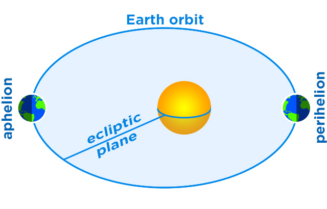
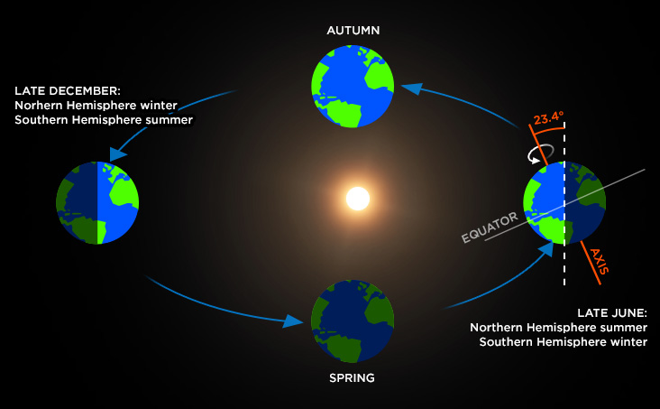

Our planet Earth rotates around its axis from west to east. An axis is an imaginary line that runs from the North Pole to the South Pole.If you look on the Earth from the northern hemisphere,it rotates counter clockwise. One complete rotation around its own axis relative to the Sun is called a solar day and has a duration of 24 hours. Our Earth doesn't rotate just around its own axis,but it also orbits in the same direction around the Sun and moves a little bit on orbit every day. Therefore the Earth gets in the same position relative to the celestial stars in a shorter time. This is called a sidereal day which has a duration of 23 hours 56 minutes and 4.1 seconds. This is the reason why the stars appear about four minutes earlier in the sky every day. A sidereal day is a period that takes the Earth to rotate around its axis so that the distant stars appear in the same position in the sky.
Our planet rotation
The point at which a planet is closest to the sun is called perihelion. The farthest point is called aphelion.Earth's rotation around its axis results in the alternation of day and night. Earth also moves around the Sun on the ecliptic plane in an elliptical orbit. This movement along with the fact that its axis is tilted to the ecliptic plane is causing the changing of seasons. But Earth's rotation and speed is even more complex: There is a long term slowing of its rotation due to the tidal forces of the Moon and Sun. As a result of the precession (a slow movement of an axis of a spinning body around another axis due to a torque such as gravitational influence, casuses a change of direction of the first axis) and nutation (a periodic variation in an inclination of an axis of a rotating object) the change of a rotational axis direction occurs.
We have four seasons
The length of Earth's trajectory around the sun is 940 million km. Thus the Earth travels about 107,000 kilometers per hour. This means that our planet moves around the Sun at an average speed of 30 kilometers per second. Earth's speed is not constant as the Earth orbits elliptical orbit. If the Earth is the closest to the Sun (perihelion), it moves the fastest. On the other hand when the Earth is the farthest from the Sun (aphelion), it moves the slowest.
Over the course of a year the orientation of the axis remains fixed in space, producing changes in the distribution of solar radiation.It takes the planet Earth about 23.9 hours to complete one rotation on its axis. Complete orbit around the Sun takes about 365.26 days. The Earth's rotation axis is tilted relative to the imaginary space orbit around the Sun.This imaginary plane is called the ecliptic plane.Position of northern and southern hemisphere toward the Sun varies depending on the season. These movements of the planet change the amount of light that each hemisphere receives, thus causing the changing of seasons. We all know that our calendar has 365 days per standard year. The extra quarter of a day presents a challenge to our calendar system. If we want to keep our annual calendar system consistent with the Earth's orbit around the Sun,then every four years one day is added to the standard year. Such a year is called a leap year and the extra day is called a leap day. So what actually causes our four-year cycle? It is the position of the Earth axis, which is tilted 23.4 degrees relative to the plane of its orbit around the Sun.This tilt causes our yearly cycle of seasons. The Northern hemisphere is tilted towards the Sun one part of a year and during this time the southern hemisphere is diverted. During this time, the solar heating is greater in the north so we have summer there, on the other hand less direct solar heating causes winter season in the southern part of our planet. The weather conditions change every six months. There is a position when both hemispheres receive approximately the same amount of heat. It is the time when spring and fall begin on our planet.
Some characteristics about Earth
| Average distance from Sun | 149,598,262 km (1.0 AU) |
| Perihelion (closest distance to the Sun) | 147,098,291 km |
| Aphelion (farthest distance from the Sun) | 152,098,233 km |
| Orbital eccentricity | 0.007 |
| Orbital velocity | 107,244 km/h |
| Tilt of axis | 23.43697° |
| Single period of revolution around the Sun | 365.26 Earth days (1.00 year) |
| Single rotation period on its axis | 23.934 h |
| Equatorial inclination to orbit | 23.4393 degrees |
Our planets orbit is not a perfect circle
An orbit is a regular and cyclic path on which an object in space is orbiting another object. Individual objects on orbit are called satellites and may be natural or artificial. Planets and moons are examples of natural satellites. An example of an artificial satellite can be the International Space Station. Our Sun, as the dominant star in the Solar System, is orbited by a number of planets, comets, asteroids and other space objects. Most of these orbiting objects are moving along or near the imaginary flat surface,which is called the ecliptic plane.An orbit of the planet Earth is not a perfect circle but it rather has a character of an oval-shaped ellipse. The Earth is slightly closer to the Sun in early January and farther away in the month of July. However a much greater effect on the intensity of heating or cooling of our planet has the tilte axis of the Earth.A very important fact is that the Earth is located in the so-called Goldilocks zone, where a temperature is just acceptable to maintain liquid water on the surface.
And finally a final motion
Our planet Earth, like other planets of the Solar System,has three motions. It spins on its axis, it travels around the Sun, and it moves through the Milky Way Galaxy with the rest of the Solar System. The third and final motion of the Earth is along with the Solar System around the center of our Milky Way Galaxy. The Sun, along with other stars of our galaxy, revolves around its center. It takes the Solar System to orbit the center about 220 million years and it orbits at the speed of about 250 kilometers per second.